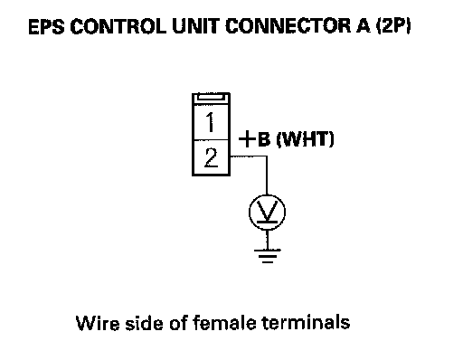

DTC 12-01
DTC 12-01: Low/High VBU Voltage (Regular diagnosis)1. Turn the ignition switch OFF.
2. Connect the HDS to the data link connector (DLC).
3. Turn the ignition switch ON (II).
4. Check the BATTERY in the DATA LIST with the HDS.
Is the voltage at 9.2 - 17.4 V?
YES - Check for loose wires or poor connections. If the connections are good, the system is OK at this time.
NO - Go to step 5.
5. Turn the ignition switch OFF.
6. Check the No. 1 (70 A) fuse in the under-hood fuse/relay box.
Is the fuse OK?
YES - Reinstall the fuse, and go to step 7.
NO - Replace the fuse, and recheck. If the fuse is blown, check for a short to body ground in this fuse circuit.
7. Disconnect EPS control unit connector A (2P) and connector D (28P).
8. Measure voltage between EPS control unit connector A (2P) terminal No. 2 and body ground.

Is there battery voltage?
YES - Check for loose terminals in the EPS control unit connectors, and repair if necessary. If no poor connections are found, replace the EPS control unit.
NO - Repair open in the wire between the EPS control unit and No. 1 (70 A) fuse in the under-hood fuse/relay box.